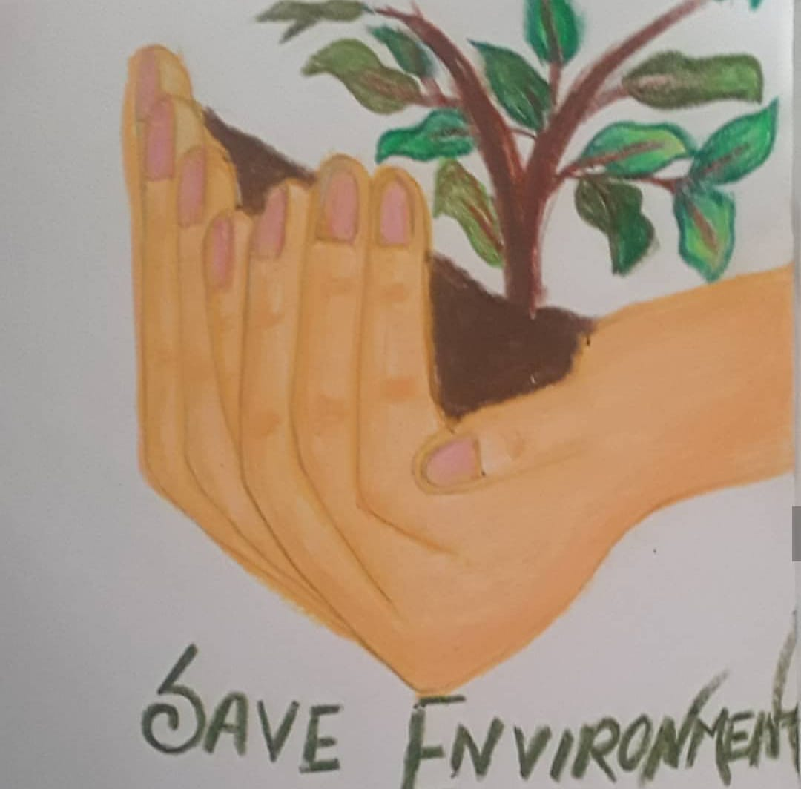
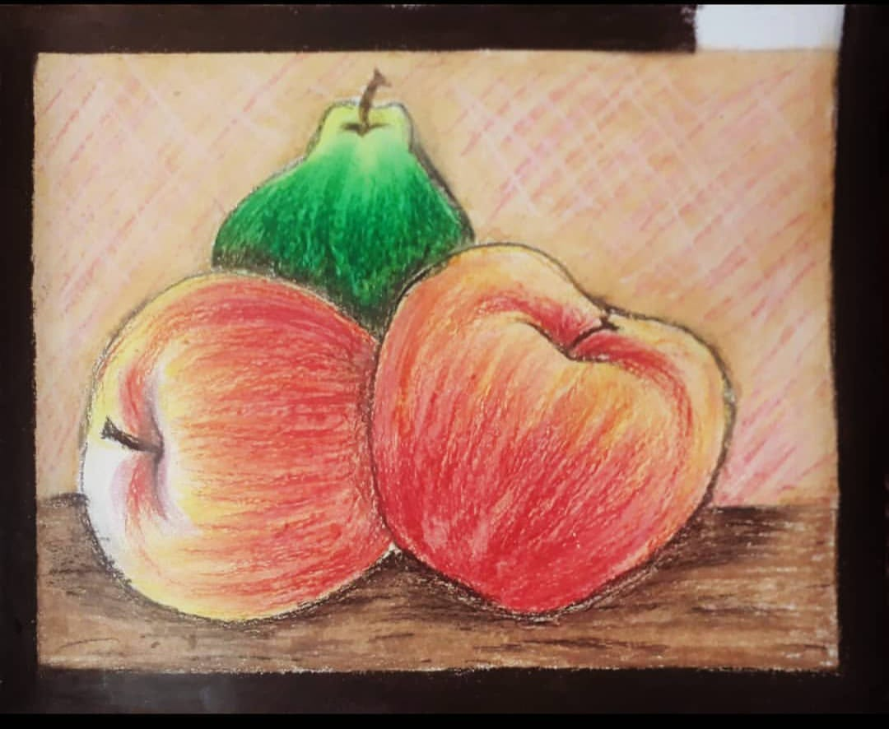
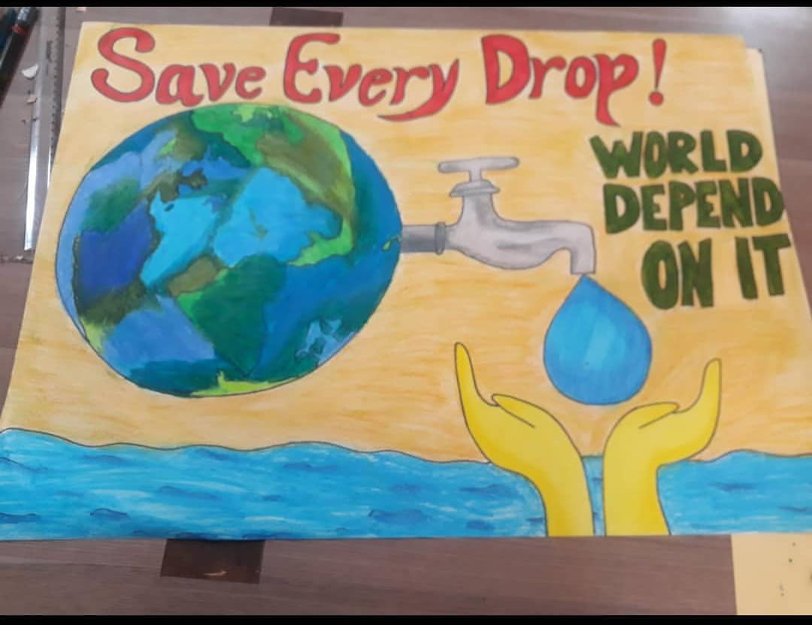
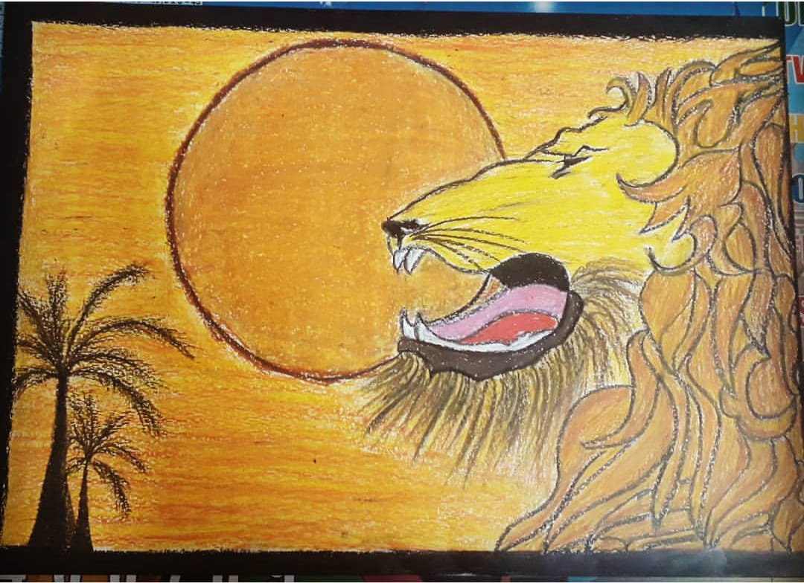
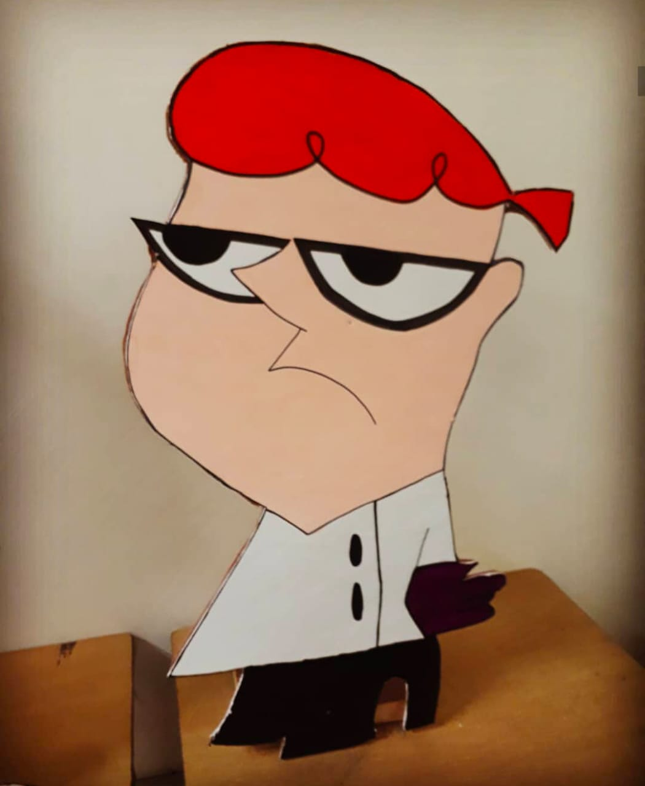
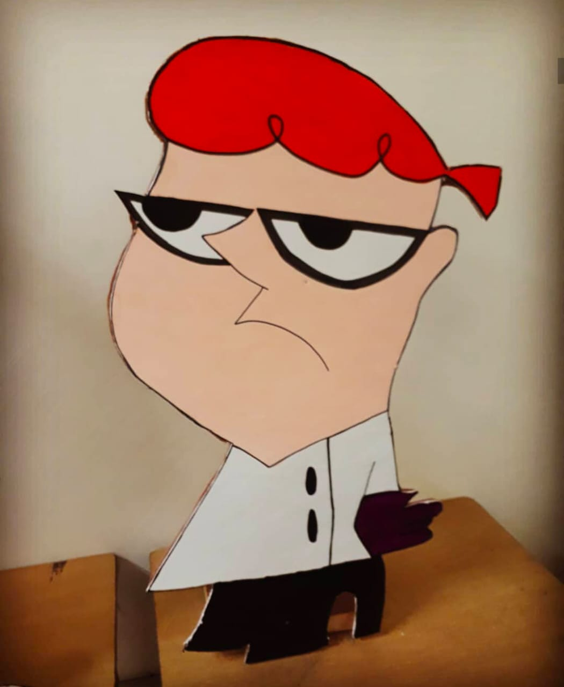
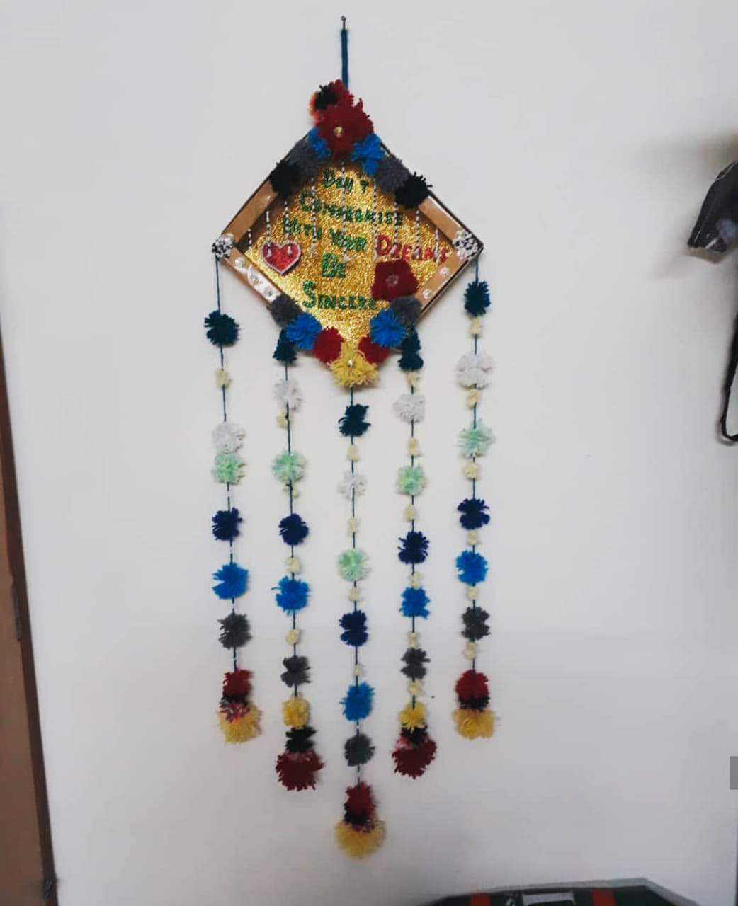
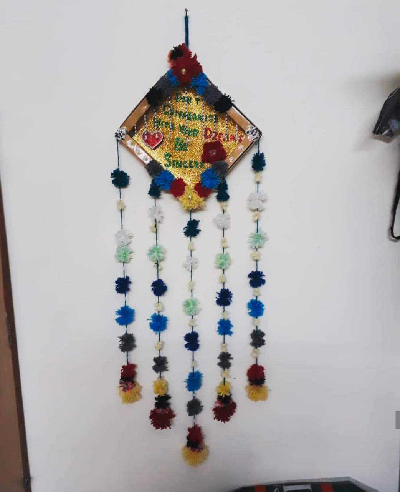

Lets start with Colorful drawings
As a beginner you shoud choose oil pastel colors, by this you can get idea for best color selections
Now try these simple drawings..and id you have some doubt then comment below :)



Hope, now you got an idea of colouring...lest's Move on the next level of coloring



Let's move on to the other step
as you can see the last picture,i.e.,craft work try that with wool and waste box and for doubts comment below
 

 

Now Try this!
For more pictures or for any doubt comment below